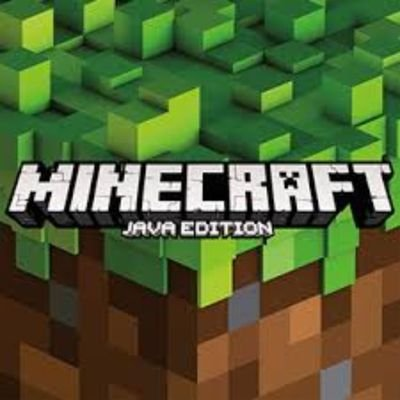
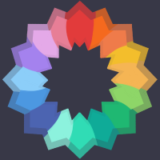
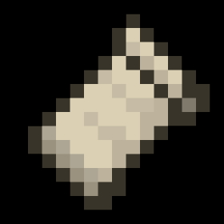

This modpack allows you to make minor improvements
your game while remaining in vanilla, so you keep all your servers and
don't need to modify your game at all.
No update for now !
Click here to check It out.

This modpack enhances your Minecraft experience
by seamlessly integrating shaders and texture packs, offering improved
visuals without overwhelming your system. It's the perfect balance between
the simplicity of the vanilla version and the resource-heavy demands of more
advanced modpacks.
No update for now !
Click here to check It out.
This version introduces a more optimized system
powered by Iris, making it compatible with lower-end setups and even
Mac M1 or higher configurations. It offers an excellent alternative to
OptiFine, delivering performance and visual enhancements tailored for
diverse systems.
No update for now !
Click here to check It out.

The Forge pack offers the most immersive
experience, introducing a wide range of innovative mods that
transform Minecraft into an entirely new game. Dive into endless
possibilities and discover a fresh take on your favorite adventure.
No update for now !
Click here to check It out.
The Fabric version is quite comparable
to the Forge pack, offering a similar experience but with fewer
features. However, it stands out with better optimization, making
it a great choice for smoother gameplay.
No update for now !
Click here to check It out.
